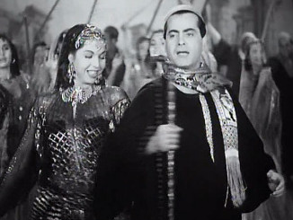

Njihanje njenog tela,Anvar Al-Gasani: The Goddess Samia Gamal
u vremenskom kontinuumu,
bilo je klatno svakodnevnog života
Samja Gamal (سامية جمال), zvezda zlatnog doba egipatske kinematografije u prvoj polovini 20. veka, do dana današnjeg opčinjava svoje obožavaoce – od kojih su mnogi rođeni davno nakon što Samja završila svoju karijeru – svojim specifičnim tečnim i stilizovanim načinom plesa.
Rođena je 1924 u oblasti Beni Suef u strogo religioznoj porodici. Majka joj je umrla kada je imala 9 godina i Samjin život se pretvorio u brutalnu priču o Pepeljuzi. Sa 14 godina otišla je od kuće u Kairo i smestila se kod starije sestre koja je već bila udata. Već sa 15 godina dobila je svoju šansu u poznatom lokalu Badije Masabni kao horistkinja.
Badija je videla potencijal u mladoj devojci i dala joj je priliku za solo nastup. Međutim, Samja je imala toliku tremu da je blokirala na sceni, zaboravivši pokrete i koreografiju. Samja je bila odlučna da pokuša ponovo i zato je vredno vežbala. Postala je igračica vešta u svim tada popularnim plesovima. Pored uobičajenog programa, imala je i posebnu tačku „ples vatre“ sastavljen od brzih koraka koje je izvodila u crvenom kostimu, udarajući u def (daire).
Postala je poznata kao „bosonoga igračica“: tokom nastupa u klubu Duluz pocepala joj se jedna cipela, ona je skinula obe i nastavila sa tačkom, na šta je publika nagradila velikim aplauzom. Posle je često nastupala bosa i tako uvela „bosonogi ples“ u modu – jer su do tada igračice u elegantnim klubovima uvek nosile cipele a la franca („po francuskoj modi“, tj evropske cipele).
Sa dvadesetak godina bila je već poznata igračica. Otkrile su je i filmadžije. Za života je snimila oko 50 filmova u kojima je, osim plesnog, došao do izražaja i njen glumački talenat. Tu upoznaje poznatog libanskog muzičara Farida Atraša ( فريد الأطرش) s kojim snima zajedno nekoliko filmova. On joj posvećuje nekoliko predivnih kompozicija i ljubavnih pesama.
Za publiku oni su idealan par, ali njihova romansa iza kulisa nije imala srećan kraj. Farid nije bio voljan da se suprotstavi svojoj porodici i oženi se igračicom.
Samja je igrala i u par stranih filmova. U francuskom filmu Ali Baba i 40 razbojnika (1954) igra lik Morgiane, uz komičara Fernandela u glavnoj ulozi.
Nakon toga slede turneje u Evropi i Americi. Vraća se Egipat i nastavlja da radi još par decenija. Osamdesetih godina dvadesetog veka, Samja se potpuno povlači iz javnosti. Umrla je 1994 u Kairu. Njen inovativni i ekspresivni ples koji je ostao zabležen na celuloidnoj traci i danas izaziva divljenje brojnih obožavalaca.
Biografski podaci o Samiji uzeti su iz knjige Umetnost orijentalnog plesa, kao i iz sledećih članaka
"Samia Gamal" fnoonarabia.com
Barbara Luscher, „The Golden Age of Egyptian Oriental Dance“. The Belly Dance Book : Rediscovering the Oldest Dance